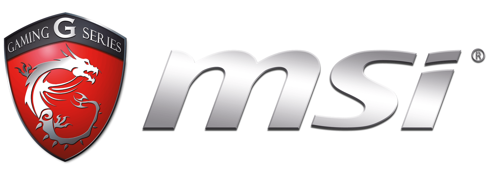

Покупка отличной материнской платы позволит использовать ПК на полную катушку.
Действительно, любой компьютер заслуживает того, чтобы в нем была установлена лучшая материнка.
Многие недооценивают важность данного элемента, однако стоит отметить, что никакие компоненты ПК не будут работать должным образом,
если материнская плата имеет низкую производительность.
Именно поэтому важно знать о ведущих производителях материнских плат, которые выпускают устройства,
способные обеспечить наилучшую производительность. И именно поэтому чуть ниже мы составили рейтинг лучших брендов по производству материнских плат.
Отметим, что при выборе материнской платы никогда не стоит идти на компромисс в плане денег, поэтому мы настоятельно
рекомендуем приобрести устройство от известного производителя.
На данный момент существуют 10 ниболее известных производителей материнских плат:
- Asus
- GIGABYTE
- Intel
- MSI
- ASRock
- AMD
- Dell
- Tyan
- Supermicro
- Biostar
Asus
Страна: Тайвань
Год основания: 1989 г.
Продукция: настольные компьютеры, ноутбуки, нетбуки, мобильные телефоны, сетевое оборудование, мониторы, проекторы, материнские платы, видеокарты и т.д.
На сегодняшний день ASUS является лучшим производителем материнских плат на рынке.
Компания выпускает отличные устройства и по праву занимает первое место среди других мировых брендов.
Дело в том, что фирма предлагает лучшие возможности разгона вместе с высококлассным функционалом.
Что касается модельного ряда, то лучшей на рынке на данный момент является Asus ROG Maximus XII HERO с универсальным форм-фактором ATX.
Также стоит отметить ROG Strix Z390-I, которая идеально подходит для геймеров.
Asus является очень популярным производителем отличных материнских плат, из-за чего вам придется заплатить чуточку больше ожидаемого,
чтобы насладиться всеми высокотехнологичными функциями.
GIGABYTE
Страна: Тайвань
Год основания: 1986 г.
Продукция: корпуса для компьютеров, компьютерная периферия, видеокарты, материнские платы, ноутбуки и т.д.
GIGABYTE – еще один замечательный и первоклассный производитель материнских плат. Бренд стремится создавать устройства высочайшего качества,
из-за чего и занимает место в топе. Компания выпускает лучшую геймерскую материнскую плату GIGABYTE Z490 Gaming X: она имеет отличный дизайн,
форм-фактор ATX, поддерживает Q-Flash и Q-Flash Plus, а также разъем LGA1200.
Устройство действительно близко к идеалу, из-за чего любой геймер наверняка захочет поставить такую в свой ПК. Также стоит выделить GIGABYTE Z390 Aorus
Ultra – еще одну геймерскую модель с отличной ценой и характеристиками.
Intel
Страна: США
Год основания: 1968
Продукция: центральные процессоры, микропроцессоры, встроенные графические процессоры (iGPU), системы на кристалле (SoC), материнские платы, контроллеры
сетевого интерфейса, модемы, мобильные телефоны, твердотельные накопители
Intel – самый популярный и один из лучших брендов по производству материнских плат на сегодняшний день.
Действительно, если вы желаете приобрести устройство высокого качества, Intel – один из лучших игроков на рынке.
Материнские платы, выпускаемые компанией, отличаются высокой стабильностью и наличием высокоточных компонентов.
Говоря о конкретных моделях, нужно отметить Intel Z490 – отличное дополнение для геймеров, поскольку плата оснащена несколькими USB-портами GEN 2X2,
Type-C и выполнена в универсальном форм-факторе ATX.
MSI

Страна: Тайвань
Год основания: 1986
Продукция: игровые ноутбуки, настольные компьютеры, мониторы, материнские платы, видеокарты и периферийные устройства
MSI – один из лучших производителей материнских плат для процессоров Intel. На сегодняшний день лучшей моделью бренда является MEG Z490 Godlike,
которая оснащена системой поддержки нескольких графических процессоров и форм-фактором E-ATX. Также материнская плата разгоняется самым простым
способом — через BIOS. В паре с процессором от Intel ваш ПК выдаст невероятную производительность.
Если же вы нуждаетесь в материнской плате компактного размера, то рекомендуем обратить внимание на MSI MPG Z390M Gaming Edge AC.
MSI Creator TRX40 – еще одна мощная материнская плата от MSI, предназначена для высокопроизводительного процессора AMD Ryzen Threadripper.
Благодаря хорошей системе охлаждения и отличным возможностям разгона модель отличается высокой эффективностью.
ASRock
Страна: Тайвань
Год основания: 2002
Продукция: материнские платы, видеокарта, сетевое оборудование, настольные компьютеры
ASRock является третьим по величине производителем материнских плат в мире. Кроме того, компания также выпускает отличные чипсеты.
Бренд оснащает свои модели ценными и полезными компонентами, чтобы устройство оставалось компактным и функциональным. Однако это не касается
ASRock X570 Phantom Gaming X, которая выполнена в форм-факторе ATX с чипсетом AMD Premium X570.
Данная модель включает несколько действительно интересных деталей, включая поддержку Wi-Fi 6, хорошие возможности разгона
и эффективное охлаждение. Если же вы являетесь поклонником компании Intel, то ASRock X299 Taichi – то, что нужно (с чипсетом Intel X299 и огромным объемом памяти).
AMD
Страна: США
Год основания: 1969
Продукция: материнские платы, микропроцессоры, графические процессоры
Ну куда же без AMD – еще одного важного игрока на рынке материнских плат. Покупка подходящего устройства от данной компании –
лучший подарок для вашего процессора, поскольку фирма является очень надежной и предлагает отличные продукты.
Так, следует упомянуть AMD MSI MPG X570 Gaming Pro Carbon Wifi – материнскую плату с поддержкой процессоров Ryzen 3-го поколения от AMD,
которая является результатом слияния передовых технологий.
Материнские платы бренда оснащены портами USB-C и Gigabit Ethernet, а также множеством разъемов на задней панели,
благодаря чему вы получаете высокоскоростное подключение и передачу данных. Кроме того, модели также совместимы с Wi-Fi 6.
Дабы выжать максимум из оборудования, материнские платы оснащены функциями премиум-класса.
Dell
Страна: США
Год основания: 1984
Продукция: персональные компьютеры, серверы, периферийные устройства, смартфоны, телевизоры.
Компания Dell уже давно признана одним из лучших производителей материнских плат. Действительно, бренд предлагает хорошие устройства
с отличными функциями премиум-класса. Так, Dell YP806 Optiplex, например, имеет отличное охлаждение и оснащена 4 слотами памяти.
Обычно материнские платы от Dell имеют слота PCI Express x1 и x16. Кроме того, стоит отметить и тип памяти DDR3 SDRAM, благодаря чему устройства
являются хорошим вложением средств. В общем и целом, покупка материнской платы от Dell – хороший выбор для вашего ПК.
Tyan
Страна: Тайвань
Год основания: 1993
Продукция: материнские платы, серверы и т.д.
Компания Tyan также преуспевает в плане производства материнских плат, поскольку её модели оснащены портами USB 2.0, Ethernet, слотами расширения PCI Express,
а также множеством других интересных функций.
Благодаря двум сокетам и хорошей оперативной памяти вы можете получить функцию быстрого разгона. Таким образом, бренд Tyan отлично подойдет при сборке новенького ПК.
Supermicro
Страна: США
Год основания: 1993
Продукция: материнские платы, компьютеры и др.
Бренд Supermicro в первую очередь известен доступными ценами и функциями поддержки. Компания производит материнские платы
высокого класса с 1993 года и продолжает делать это и по сей день!
Среди наиболее интересных моделей стоит выделить X10SLL-F-O из серии MBD-X10SLL-F-O, которая идеально подойдет при сборке бюджетного
игрового ПК. Устройство оснащено разъёмом LGA 1150, несколькими USB портами и отличным разгоном.
Biostar
Страна: Тайвань
Год основания: 1986
Продукция: материнские платы, компьютеры Barebone, настольные компьютеры, карты расширения, видеокарты, наушники и т.д.
Материнские платы от Biostar так же хороши, как и любые другие высокопроизводительные устройства на рынке.
Бренд изо всех сил старается оставаться в топе, из-за чего частенько выпускает очень интересные модели. Тут следует отметить BIOSTAR TZ77XE3,
оснащенную отличными функциями и выполненную в универсальном форм-факторе ATX.
EX3 и EX4 пользуются успехом среди пользователей, и все благодаря дополнительной мощности для разгона и высоконадежной работе.
Кроме того, бренд является одним из самых доступных на рынке.

 и разъемы для подключения комплектующих ПК, таких как: видеокарты, оперативная память, процессор, накопители данных, а также периферии.
и разъемы для подключения комплектующих ПК, таких как: видеокарты, оперативная память, процессор, накопители данных, а также периферии.